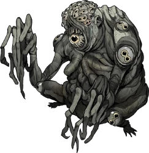

-
Degolificada #001

- Medo
- Sangue
- Conhecimento
- Energia
- Morte
"Mesmo com relatos de agentes que tiveram sucesso em suas investigações, a frase que se repete como uma lenda despertando Medo por todos os agentes da Ordem é: "Se você vir longos cabelos pretos flutuando em sua direção... CORRA."
-
Esqueleto de Lodo #001
- Morte
O Lodo escorre por todos os orifícios de seu corpo, deixando um rastro que parece perseguir a criatura por onde ela passa.
-
Titã de Sangue #003
- Sangue
A maior versão já encontrada de um zumbi de sangue, o titã é uma criatura monstruosa.
-
Marionete #004
- Morte
Você queria ver a Morte? Eu vou trazer a Morte...
-
Ocioso #005
- Conhecimento
Ele nunca se move, mas está sempre lá.
-
Zumbi de Sangue #006
- Sangue
Sem raciocinar ou pensar estrategicamente em nenhum momento, são movidos apenas por uma frenesi obsessiva e brutal.
-
Espreitador #007
- Medo
- Conhecimento
Você verificou se fechou a porta?
-
Vulto #008
- Conhecimento
Em ambientes com a Membrana danificada, às vezes pode ser difícil discernir fatos da paranóia do seu próprio cérebro.
-
Ciborgue #009
- Medo
- Sangue
- Energia
O avanço da tecnologia e a obsessão com melhorias cibernéticas dentro da Realidade podem levar aos resultados mais bizarros.
-
Múmia #010

- Morte
Mesmo nos tempos do Antigo Egito, o ato de mumificação em busca da imortalidade possuía resultados macabros e indesejados.